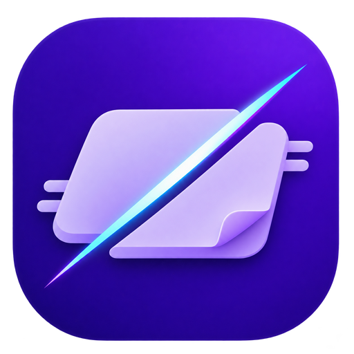

좌클릭 이동 · 우클릭 베기 · Ctrl+휠 크기 · Ctrl+Shift+휠 검술
원하는 모습을 고르면 바로 적용됩니다.
PNG · WebP, 최대 16MB · 투명 영역 유지
모니터를 바꾸면 러그가 해당 화면에 원위치됩니다.
최상위는 일반 창 위에 표시됩니다. 300%로 키우면 화면을 가리는 용도로 사용할 수 있습니다.
Windows 앱에서 모니터를 선택할 수 있습니다. 연결이 끊기면 주 모니터로 돌아옵니다.
좌클릭 이동 · 우클릭 베기Ctrl+휠 크기 · Ctrl+Shift+휠 검술Ctrl+Shift+R 원위치 · Shift 입력 통과
선택한 검기의 실제 적용 이미지입니다.
📄 샘플 문서.txt